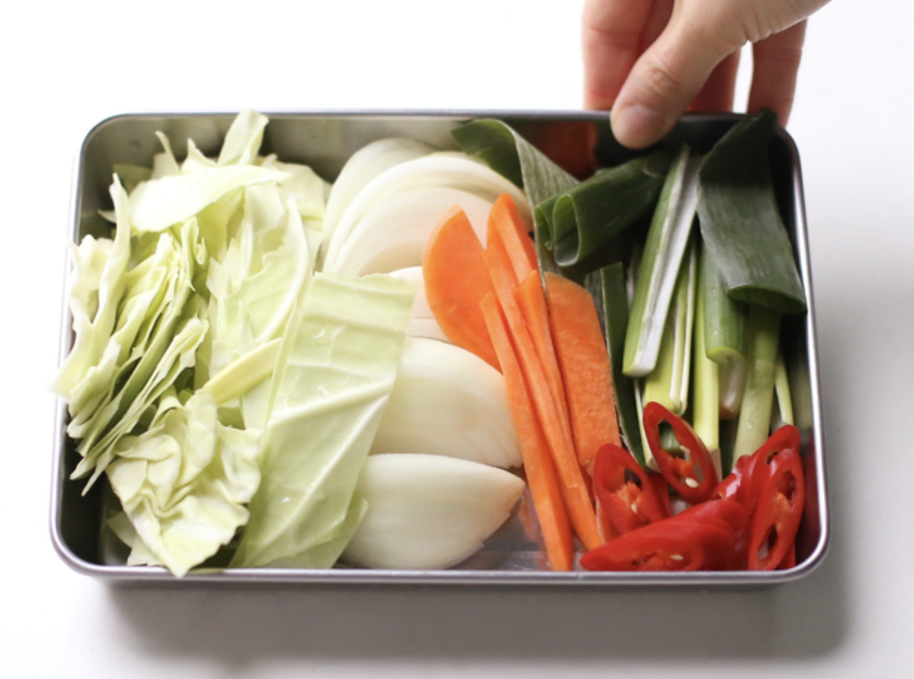
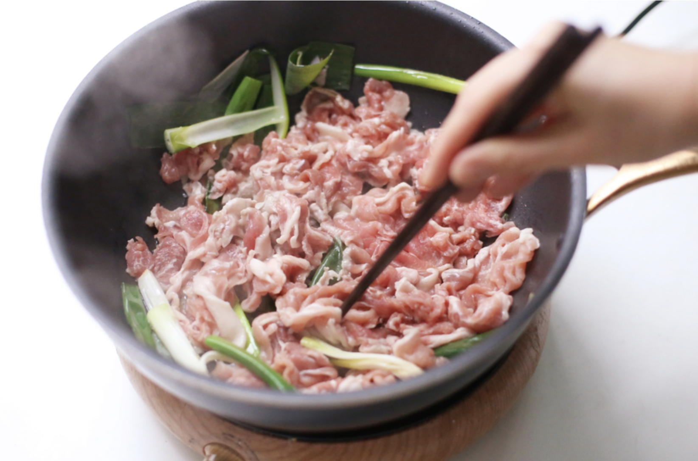
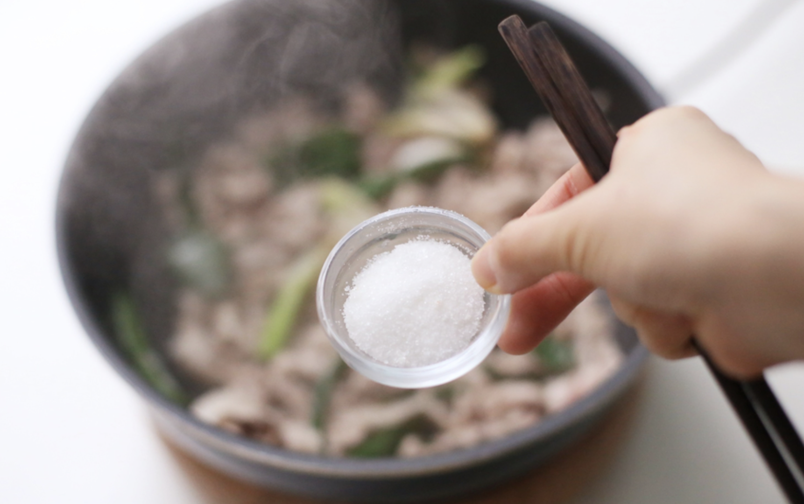
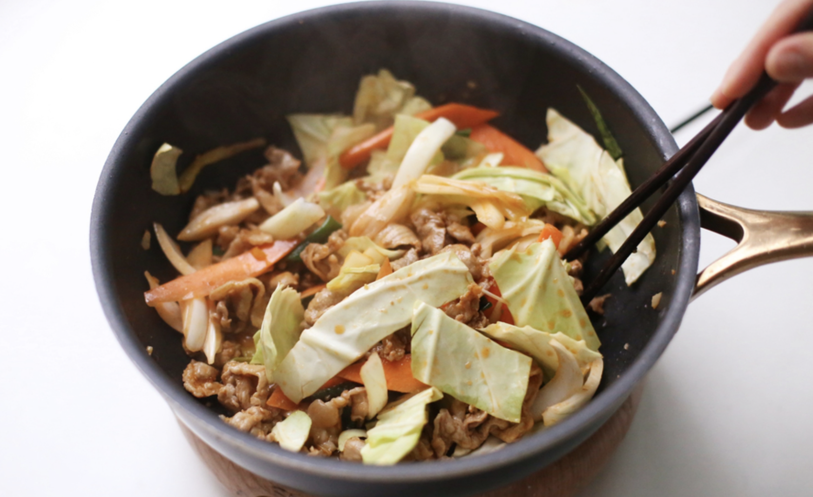
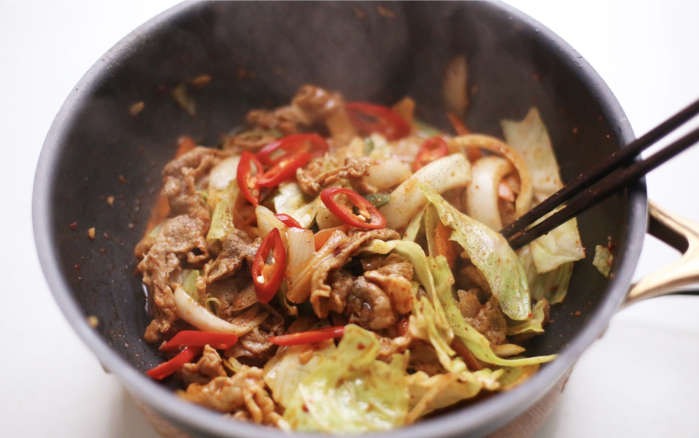

요리법
1)요리재료
재료 : 돼지고기 전지 2컵(300g), 대파 2대, 양파 1/2개, 양배추 한 줌, 청양고추 2개, 당근 1/6개, 물 100mg, 고추장 1.5스푼, 다진 마늘 1스푼, 간장 2스푼, 고춧가루 1스푼, 설탕 1.5스푼, 참기름 1스푼, 식용유 5스푼, 후춧가루 조금
2)기본정보
조리시간 : 20분 내외
분량 : 2인분 기준
칼로리 : 124kcal
3)요리과정

01. 각종 채소를 먹기 좋은 크기로 썰어둔다.

02. 물 100mg, 고추장 1.5스푼, 다진 마늘 1스푼, 간장 2스푼을 넣고 고추장이 잘 풀어지도록 섞는다.

03. 식용유 5스푼을 두르고 대파를 넣어 강불로 볶는다.

04. 준비한 돼지고기 전지를 넣고 한 장 한 장 넓게 펼치며 볶아준다.

05. 고기가 하얗게 변하면 설탕을 넣고 다시 볶아준다.

06. 고기가 익으면 미리 섞어두었던 제육볶음 양념을 붓고 양배추, 양파, 당근을 넣고 볶는다.

07. 야채가 어느 정도 볶아지면 고춧가루, 참기름, 후춧가루, 청양고추를 넣고 뒤섞는다.